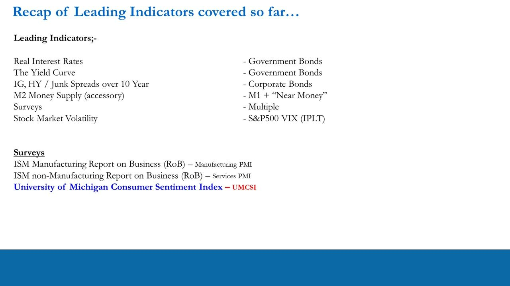
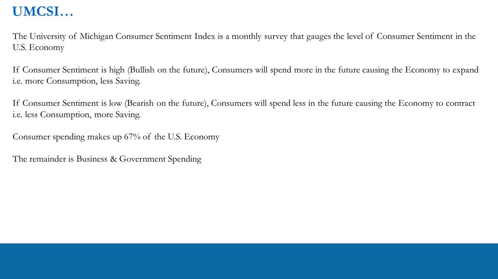
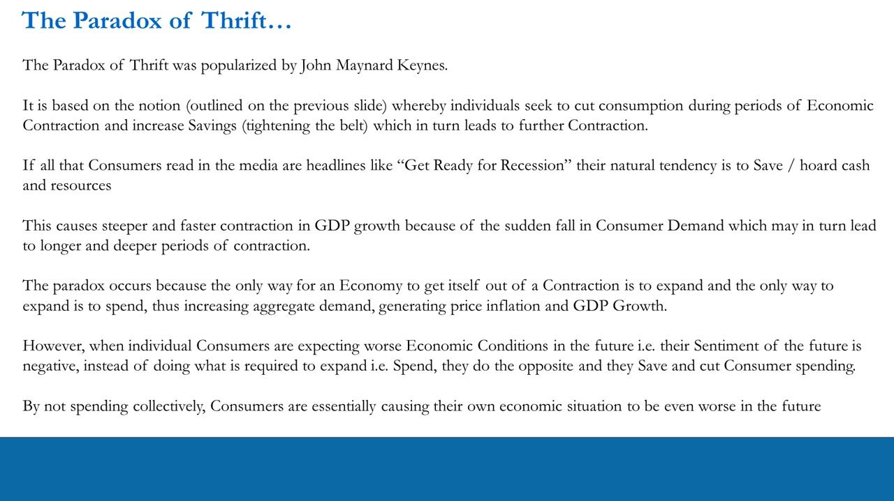
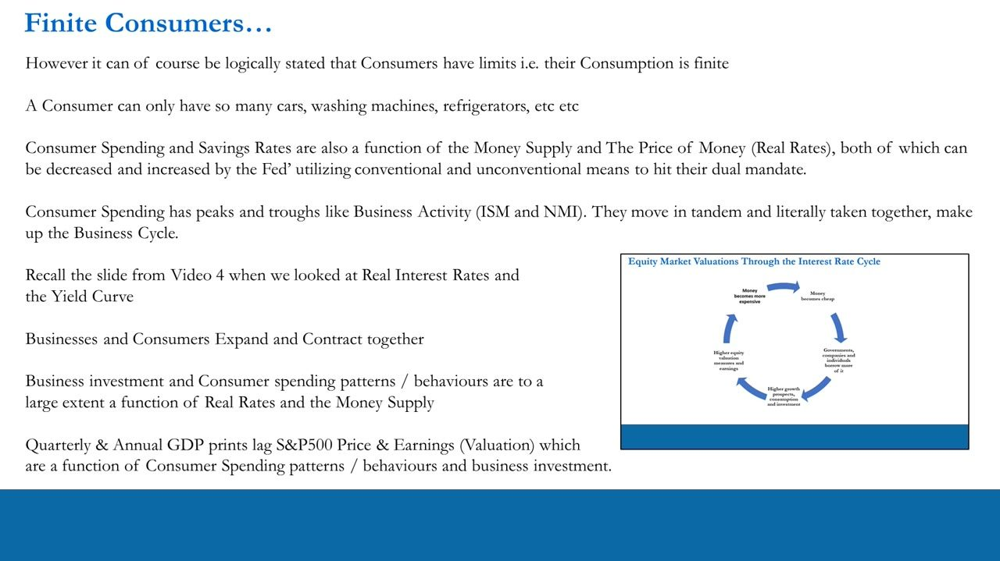
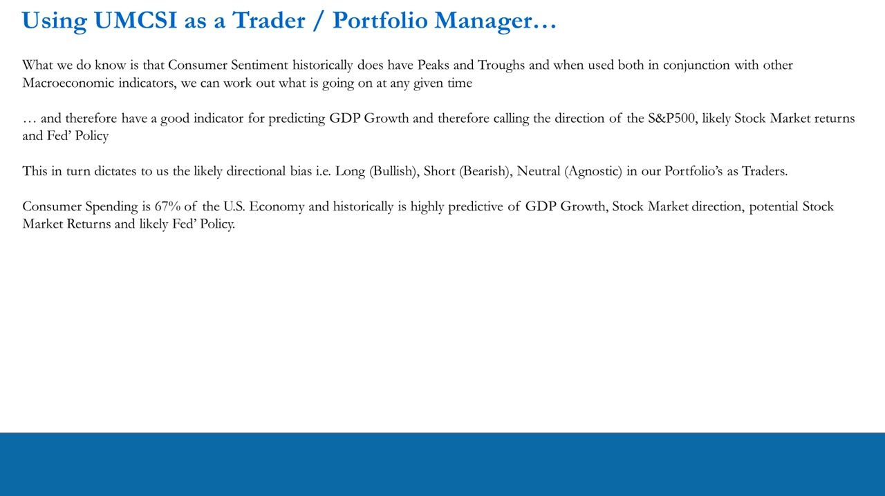
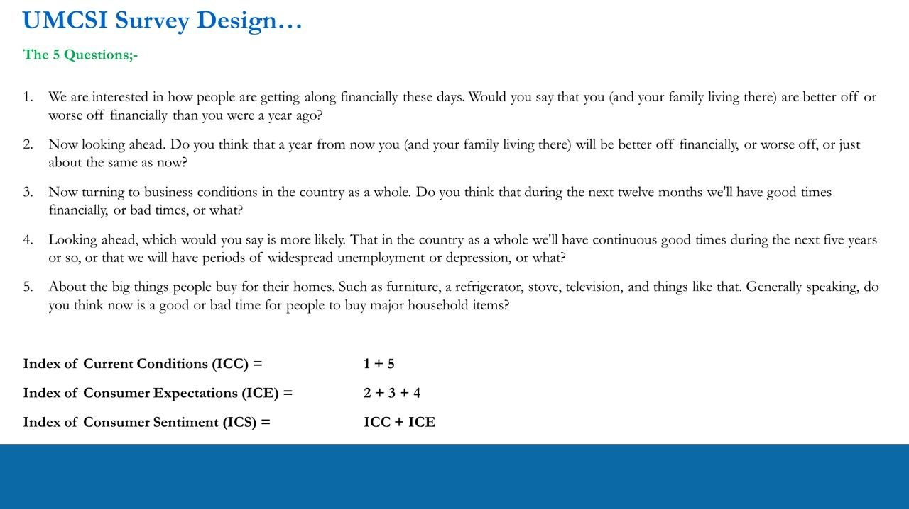
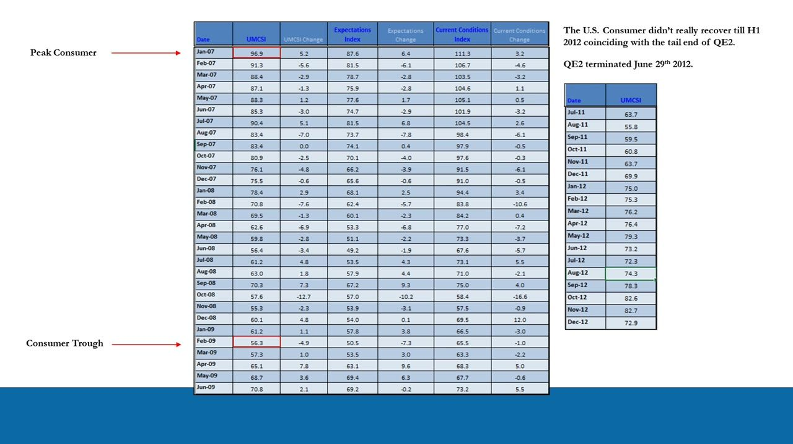
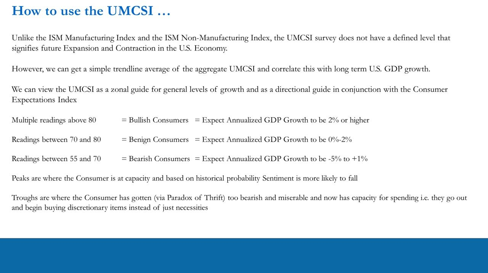
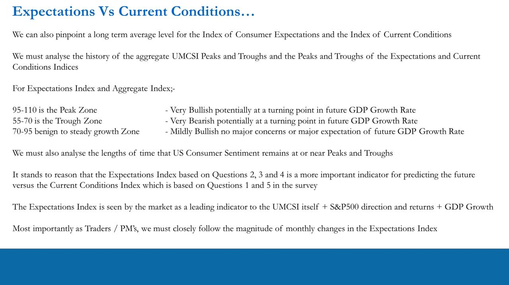
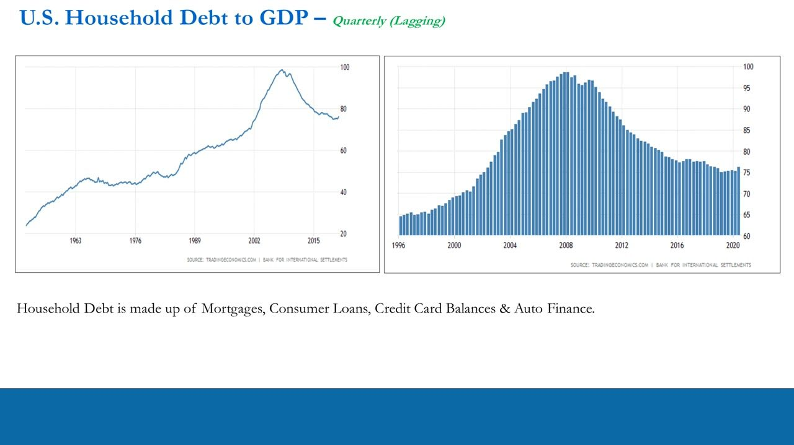

Consumer Sentiment
The University of Michigan Consumer Sentiment Index (UMCSI) as a leading indicator
Because consumer spending is ~67% of the US economy, the University of Michigan Consumer Sentiment Index is a powerful leading indicator of GDP growth, S&P 500 direction and Fed policy.
The gist
- Consumer spending is ~67% of the US economy, so consumer sentiment is highly predictive of future GDP growth, S&P 500 direction/returns and likely Fed policy.
- UMCSI has NO fixed expansion/contraction line (unlike the ISM 50-line) — read it ZONALLY: >80 bullish (GDP >=2%), 70-80 benign (0-2%), 55-70 bearish (-5% to +1%).
- The aggregate index (ICS) = 50% Current Conditions (ICC, Q1+Q5) + 50% Expectations (ICE, Q2+Q3+Q4), from a monthly phone survey of just 500 consumers.
- The Expectations index is THE leading indicator — watch its level and, above all, the MAGNITUDE of its monthly change.
- Peaks = consumer at capacity (more likely to fall); troughs = consumer too thrifty and about to spend again (Paradox of Thrift in reverse).
- Not a rulebook — every cycle differs; read sentiment alongside real rates, money supply and consumer-capacity gauges (household debt/GDP, debt-service ratio).
Where UMCSI sits in the leading-indicator suite
- Recap of leading indicators covered: real interest rates and the yield curve (govt bonds), IG/HY spreads over the 10-year (corporate bonds), M2 money supply, surveys, and S&P 500 volatility (VIX).
- The survey leg has three: ISM Manufacturing PMI, ISM non-Manufacturing (Services) PMI, and the University of Michigan Consumer Sentiment Index (UMCSI).
- UMCSI is the CONSUMER survey, added after the two ISM business surveys.

What UMCSI is and why it matters
- A monthly survey gauging the level of consumer sentiment in the US economy.
- High sentiment (bullish on the future) -> consumers spend more -> economy expands (more consumption, less saving).
- Low sentiment (bearish on the future) -> consumers spend less -> economy contracts (less consumption, more saving).
- Consumer spending makes up 67% of the US economy; the rest is business and government spending.
Because the consumer is roughly two-thirds of the economy, gauging their sentiment is highly predictive of future GDP growth, stock-market direction and returns, and likely Fed policy.

The Paradox of Thrift
- Popularized by John Maynard Keynes: during a contraction individuals cut consumption and increase saving ('tighten the belt'), which deepens the contraction.
- Recession headlines make consumers hoard cash, causing a sudden fall in demand and steeper, longer GDP contraction.
- The paradox: the only way out of a contraction is to spend (raising aggregate demand and growth), but negative sentiment makes consumers do the opposite.
- High sentiment = rational (spending, improving living standards); low sentiment = irrational (hoarding, worsening their own situation).
Critics (non-Keynesian economists) argued higher savings raise bank reserves and lending, so with a constant money supply the business cycle should self-correct via market interest rates. Anton's point: the world isn't that simple, it's messy, and there is no ultimate rulebook.

Consumers, businesses and the interest-rate cycle
- Consumption is finite — a consumer can only own so many cars, refrigerators, etc.
- Consumer spending and saving rates are a function of the money supply and the price of money (real rates), both managed by the Fed to hit its dual mandate.
- Consumer spending has peaks and troughs like business activity (ISM/NMI); together they make up the business cycle — businesses and consumers expand and contract together.
- Quarterly and annual GDP prints LAG S&P 500 price and earnings, which are themselves a function of consumer spending and business investment.

Using UMCSI as a trader / PM
- Consumer sentiment has historical peaks and troughs; used with other macro indicators it tells you what is happening at any given time.
- It is a good predictor of GDP growth and therefore of S&P 500 direction, likely stock-market returns and Fed policy.
- That dictates the portfolio's directional bias: Long (bullish), Short (bearish) or Neutral (agnostic).

Survey design: the 5 questions and ICS = ICC + ICE
- The University of Michigan Consumer Research Center telephone-surveys just 500 consumers each month on personal finances and business conditions.
- Five questions, split into two equally-weighted (50/50) components.
- Index of Current Conditions (ICC) = Q1 + Q5 (better/worse off than a year ago; is now a good time to buy big household items).
- Index of Consumer Expectations (ICE) = Q2 + Q3 + Q4 (finances a year from now; business conditions over the next 12 months; good times over the next 5 years).
- Index of Consumer Sentiment (ICS) = ICC + ICE.
The Current Conditions questions (Q1, Q5) ask about the present; the Expectations questions (Q2, Q3, Q4) ask about the future — which is why Expectations is the forward-looking leg.

Reading the history: peaks and troughs
- GFC example: 'Peak Consumer' at Jan-07 (UMCSI 96.9) declining to the 'Consumer Trough' at Feb-09 (UMCSI 56.3) — a two-year fall.
- The consumer didn't really recover until H1 2012, coinciding with the tail end of QE2.
- Aug-18 to Aug-19: no aggregate consumer 'recession', but the Expectations index drove the drop (Expectations 79.9 vs Current Conditions 105.3 in Aug-19) — the consumer was tiring, matching the manufacturing-led slowdown.

How to use the UMCSI: the zonal framework
- Unlike the ISM PMIs, the UMCSI has NO defined level marking future expansion vs contraction — read it as a zonal guide.
- Multiple readings above 80 = bullish consumers = expect annualized GDP growth of 2% or higher.
- Readings 70 to 80 = benign consumers = expect annualized GDP growth of 0% to 2%.
- Readings 55 to 70 = bearish consumers = expect annualized GDP growth of -5% to +1%.
- Peaks = consumer at capacity, sentiment more likely to fall; troughs = consumer too bearish/thrifty and now has capacity to spend again (buys discretionary items, not just necessities).
- Take a simple trendline average of the aggregate UMCSI and correlate it with long-term US GDP growth; read direction in conjunction with the Expectations index.
The zones are a 'best average' from the 1978-onward dataset, not a hard rule — every business cycle differs, and the Fed watches sentiment and can respond.

Expectations vs Current Conditions: watch the change
- Pinpoint long-term average levels for BOTH the Expectations and Current Conditions indices, and analyse their historical peaks and troughs.
- For the Expectations and aggregate indices: 95-110 = peak zone (very bullish, possibly at a turning point); 55-70 = trough zone (very bearish, possibly at a turning point); 70-95 = benign/steady growth (mildly bullish).
- Also analyse how LONG sentiment stays at or near peaks and troughs.
- Expectations (Q2, Q3, Q4) is a more important forward predictor than Current Conditions (Q1, Q5).
- The market treats the Expectations index as a leading indicator to the UMCSI itself, to S&P 500 direction/returns and to GDP growth.
- Most important of all: closely follow the MAGNITUDE of monthly changes in the Expectations index.

Filling in the big picture: consumer capacity
- Consumer spending and saving are a function of real rates and the money supply, both 'manipulated'/managed by the Fed — so keep an eye on consumer capacity.
- US Household Debt to GDP (quarterly, lagging) peaked near ~100% around 2007-08, then fell to ~75-78% by 2020; it is made up of mortgages, consumer loans, credit-card balances and auto finance.
- US Household Debt Service Payments as % of Disposable Personal Income peaked ~13.2% around 2007-08 and fell to ~9-10% through the 2010s — lower debt-service burden = more spending capacity.
- The real 10-year yield (RR10CUS) trended structurally down over four decades, from an ~8.96% high in 1983 to -0.34% as of Jan-2021.
These capacity gauges are quarterly and lagging, so they don't lead the market — they frame how much room the consumer actually has to keep spending, completing the picture the leading indicators start.

Glossary
- UMCSIUniversity of Michigan Consumer Sentiment Index — a monthly survey of 500 US consumers gauging their sentiment about their financial future.
- ICSIndex of Consumer Sentiment — the aggregate headline index; a 50/50 blend of Current Conditions (ICC) and Expectations (ICE).
- ICCIndex of Current Conditions — the present-focused component, built from survey questions 1 and 5.
- ICEIndex of Consumer Expectations — the forward-looking component (questions 2, 3, 4); treated as THE leading indicator.
- Paradox of ThriftKeynes' idea that consumers saving/hoarding during a downturn deepens the contraction, because escaping a contraction requires spending.
- Household Debt to GDPA quarterly, lagging gauge of consumer capacity — total household debt (mortgages, consumer loans, credit cards, auto finance) as a share of GDP.